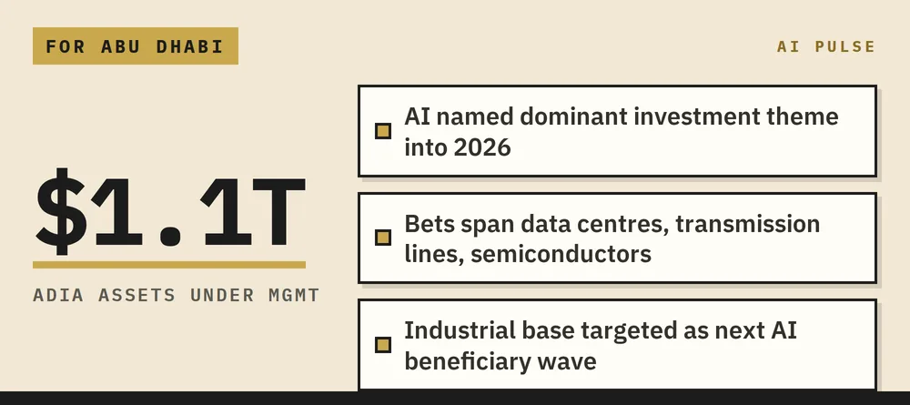
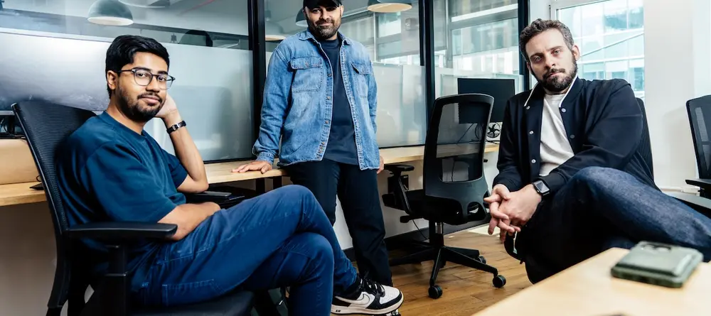
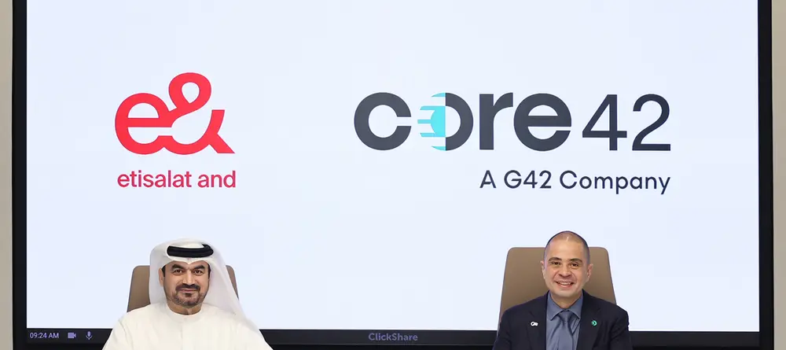
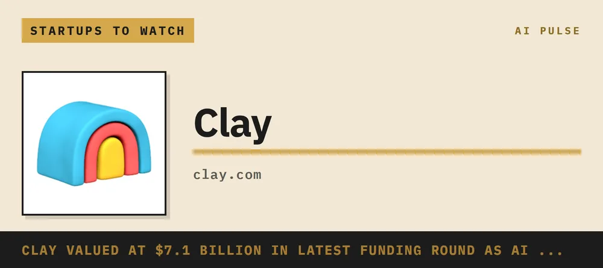
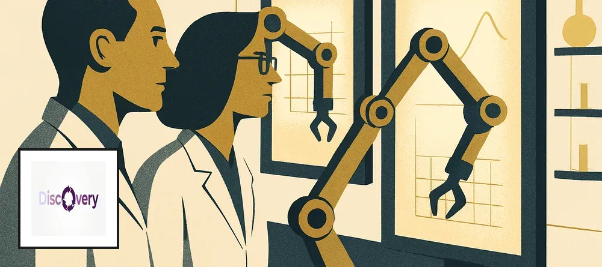

Abu Dhabi has signed a package of deals with OpenAI covering government services, food safety, and investment analysis — the most concrete public commitment yet by a Gulf state to rebuild its public sector around AI. The centrepiece is a "Machine-Readable Government" initiative designed to digitise and automate government services end-to-end, with the explicit ambition of becoming an AI-native government. Mubadala and Inception42 will work alongside OpenAI on AI-driven investment screening and risk assessment. Abu Dhabi is now the clearest real-world test of whether a state can be rebuilt around AI from the inside out.
The National (UAE)Abu Dhabi and OpenAI have announced a suite of deals that go well beyond a single contract, covering four distinct areas: public-sector digitisation, food supply chain optimisation, sovereign investment analysis, and education. The flagship commitment is the "Machine-Readable Government" initiative — an effort to make government services fully automated and AI-navigable, with the stated goal of becoming the world's first AI-native government. On the investment side, Mubadala and Inception42 will integrate OpenAI's models into their deal-sourcing and risk workflows, a signal that sovereign wealth is now using AI not just as a portfolio theme but as an internal operating tool. A live pilot with the Abu Dhabi Agriculture and Food Safety Authority is already using AI to optimise food import decisions — a quietly strategic move for a country that imports over 80 percent of its food. OpenAI's CEO used the announcement to position the UAE as setting a "bold global standard" for AI-led governance. The deals collectively make Abu Dhabi the most advanced real-world laboratory for state-level AI deployment currently running anywhere.
In a single week, Abu Dhabi signed three distinct AI agreements with OpenAI and G42: one to make government policy machine-readable and executable, one to deploy frontier AI across Adnoc's energy operations, and one to reshape education. Taken separately, each looks like a procurement deal. Taken together, they amount to a live experiment in AI-run statehood. No other capital is moving at this speed, at this breadth, with this level of institutional commitment. South Korea just announced 4.7 trillion won for a sovereign AI model — Abu Dhabi is already deploying frontier models against real systems.
The DeskThree deals, one week, one city. Abu Dhabi signed agreements with OpenAI and G42 to deploy AI across government services, food safety, and education. On the same day, Adnoc — the emirate's energy backbone — signed a separate deal with OpenAI and G42, making it the first energy company in the world to deploy OpenAI's frontier models in live operations. The ambition is not incremental: the government deal explicitly targets "machine-readable governance," in which policy logic becomes something an AI can interpret, execute, and audit in real time.
The obvious read is that Abu Dhabi is making a large, smart bet on a proven partner. That reading is incomplete. What is actually happening is a structural experiment in state architecture. Most governments that talk about AI in public services mean a chatbot on a ministry website. The machine-readable governance concept — if implemented as described — means encoding the rules of the state in a format that AI agents can act on autonomously. That is not a productivity upgrade; it is a different theory of how government works. No Western capital has attempted this at the national level, in part because their legacy legal and bureaucratic infrastructure makes it nearly impossible. Abu Dhabi, with a younger institutional base and a single coherent decision-making centre, has a genuine structural advantage here.
The Adnoc deal adds another dimension. Energy operations at Adnoc's scale — exploration, refining, logistics, trading — generate the kind of complex, high-stakes decision environments where frontier AI inference has the most to prove. If Adnoc publishes measurable outcomes, it becomes the global reference case for AI in hydrocarbon operations. That reference case is worth more than the efficiency gains themselves: it positions G42 and Abu Dhabi as the credible integrators for every national oil company in the world looking to follow.
The risk is also visible. Alterra, the UAE's $30 billion climate fund, said publicly this week that it is deliberately hedging against an AI bubble by backing energy-system applications rather than AI infrastructure directly. That is a sophisticated and honest position — and it is a signal worth taking seriously. Concentrating sovereign governance functions in a single external model provider creates a dependency that no procurement contract fully resolves. The question Abu Dhabi's leadership should be asking is not whether OpenAI is the right partner today, but what the exit architecture looks like if the model, the company, or the relationship changes.
The immediate watch is execution cadence. Announcements of this kind are only meaningful if followed by published pilots, measurable outcomes, and — critically — a clear articulation of which government functions are being handed to AI inference and which are not. South Korea is spending 4.7 trillion won to build a sovereign model precisely because it does not want to depend on an external provider for state functions. Abu Dhabi is making the opposite bet: move fast with the best available model, and use G42 as the local layer of control. Both strategies are coherent. Only one of them is being tested in production right now.
GitHub's former CEO Thomas Dohmke has launched Entire, a coding platform rebuilt from scratch around AI agents. Instead of pull requests reviewed by humans, Entire uses a feature called Trails — automated evaluations scored by agents after every code push. The bet is that the pull request, software's most durable collaboration ritual, is now obsolete. Whether a founding team of one credible ex-CEO can take on GitHub's near-monopoly is the real question.
The VergeThomas Dohmke, who led GitHub through its post-Microsoft maturation, has stepped out to build Entire — a platform that treats AI agents as first-class collaborators rather than bolt-on assistants. The core departure from GitHub is structural: pull requests, the decades-old ritual where one engineer asks another to review their code, are replaced by Trails, a system of customizable evaluations that agents run automatically after every code push. The platform is also designed to be decentralized, a deliberate contrast to GitHub's centralized model. No funding figures have been disclosed yet, but the founder's pedigree will attract attention quickly. The deeper implication is that someone with an insider's view of how developers actually work decided the existing paradigm needed to be scrapped entirely, not patched. Abu Dhabi's developer-facing entities — from Hub71 portfolio companies to the teams building on ADIO's AI infrastructure — will feel this shift as agent-driven workflows become the norm.
After years of "trust us, it's working," AI is finally showing up in corporate earnings with hard numbers attached. Santander reported 194 million euros in AI-generated business value in the first nine months of 2026 alone; Meta says AI is driving meaningful incremental ad revenue; Google Cloud more than doubled its quarterly revenue, partly on AI-enabled services. ==The "prove it" moment for enterprise AI has arrived — and the numbers are holding up.__
CNBCFor most of the past three years, AI spending sat in the "strategic bet" column of corporate balance sheets — real costs, uncertain returns. That is changing. Santander booked 194 million euros in measurable AI value in the first three quarters of 2026 alone. Meta attributed a significant chunk of its incremental advertising revenue to AI-driven targeting and creative tools. Alphabet's Google Cloud more than doubled Q3 revenue, with AI-enabled products cited as a primary driver. Novartis and Standard Chartered are reporting quieter but real gains in cost efficiency and profitability. The pattern across sectors — banking, pharma, tech, advertising — suggests this is not isolated. For Gulf institutions still treating AI as a future-state programme, the message from Q3 earnings season is blunt: peers who moved first are now compounding their lead in the income statement.
A Nvidia-backed Indonesian AI infrastructure firm, Zankore, has launched a $3.1 billion syndicated loan to finance a major GPU factory expansion — one of the largest single GPU-financing deals seen in Asia. The five-year facility carries a 330 basis-point margin over SOFR, with United Overseas Bank and Citigroup among five initial underwriters. Sovereign and private AI compute buildouts are now large enough to move the syndicated loan market — a signal of how seriously Asia is treating AI infrastructure as a bankable asset class.
BloombergZankore, an Indonesian AI infrastructure company backed by Nvidia, has launched a $3.1 billion five-year syndicated loan — structured much like a toll-road or power-plant deal — to fund large-scale GPU procurement for its AI factory expansion. The facility prices at 330 basis points over SOFR, and United Overseas Bank and Citigroup are among the five banks that have already underwritten it, with more expected to join in the senior phase. The deal is notable not just for its size but for what it signals: banks are now comfortable underwriting GPU-backed cash flows the same way they underwrote fibre networks in the early 2000s. Southeast Asia is emerging as a serious compute hub, with Indonesia in particular positioning its scale — land, power, population — as leverage. For Gulf sovereign investors watching compute as an asset class, this financing structure offers a replicable template: Nvidia equity backing plus bank debt to de-risk large GPU deployments at scale.
Fifty teacher-education leaders from across Latin America gathered in a UNESCO-organised round table to tackle a question every education ministry is now sitting with: how do you train teachers for classrooms where AI is already present? The discussions covered curriculum reform, assessment integrity, and keeping professional judgment at the centre — not AI. The consensus was that initial teacher education needs structural reform, not just a new elective.
UNESCOUNESCO's Santiago office brought together 50 representatives from teacher-training institutions across Mexico, Colombia, and Chile in late October 2026 to confront a widening gap: AI is entering classrooms faster than faculties of education are preparing teachers to handle it. The round table — co-organised with REDECANEDU, CONFAUCE, and CodeAI — focused on three pressure points: how to embed AI literacy into initial teacher education curricula, how to redesign assessment in ways that preserve academic integrity, and how to ensure pedagogy and teachers' own judgment remain central rather than delegated to a tool. Participants agreed that surface-level add-ons — an optional module here, a workshop there — are insufficient; the consensus pointed toward structural reform of how teachers are credentialled from the outset. For Abu Dhabi, the parallel is direct: the UAE has the policy ambition and the infrastructure, but the same bottleneck applies — a national framework for AI-ready teacher training, built into initial certification rather than bolted on afterwards, is the missing piece.
Meta is raising $95 billion through a public stock offering — one of the largest capital raises in corporate history — to fund AI infrastructure and what it calls "superintelligence" work. The first tranche is $35 billion in underwritten equity, with Nvidia, AMD, and Broadcom each eyeing stakes of up to $5 billion. The chipmakers buying into the company that buys their chips is a signal of how tightly the AI supply chain is binding together. Goldman Sachs puts total AI-related capex at $7.6 trillion through 2031 — and Meta wants a commanding share of it.
CNBCMeta announced a $95 billion stock offering in late October 2026, framing it explicitly as fuel for AI infrastructure and superintelligence research — a term that signals ambitions well beyond its current product suite. The deal's opening tranche is $35 billion in underwritten public equity, making it one of the largest single capital raises in tech history. Notably, Nvidia, AMD, and Broadcom are each looking at taking up to $5 billion in shares, an unusual move that effectively turns Meta's chip suppliers into shareholders — aligning their interests directly with Meta's AI build-out. Meta stock dipped roughly 1.6% on the news, a modest market reaction to a deal of this scale, suggesting investors are already pricing in aggressive AI spending. The raise lands as Goldman Sachs estimates total AI-related capital expenditure will hit $7.6 trillion between 2026 and 2031. For sovereign investors and Gulf wealth funds already exposed to AI infrastructure, this offering sets a new benchmark for how fast and at what scale the top players intend to move.
South Korea has unveiled its largest-ever national budget, committing 4.7 trillion won — roughly $3.4 billion — to build a world-leading sovereign AI model and the data-centre infrastructure to run it. The move is explicitly designed to cut dependence on foreign AI systems and anchor Korea's next wave of export growth. A sovereign model backed by state scale is fast becoming the template every serious government reaches for. Abu Dhabi, already deep into this playbook, has direct proof of concept to watch.
CNBCSouth Korea's 2027 national budget — its largest ever, up 12.8% to 820.9 trillion won — places sovereign AI at the centre of the country's economic strategy. The headline commitment is 4.7 trillion won earmarked specifically to develop a domestically owned, world-class AI model, paired with major investment in AI-focused data centres and semiconductor infrastructure. The government is also funding training for around 2,000 specialists in chip design, treating talent as a strategic input alongside compute. The framing is explicitly defensive as well as offensive: reduce reliance on U.S. and Chinese AI systems while protecting Korea's near-$1 trillion annual export base. For Abu Dhabi, the Korea playbook — sovereign model, state-funded compute, targeted talent pipeline — mirrors the logic behind Falcon and the TII, but at a scale and speed that will pressure every other government to match it. The race to own your own frontier model just got a much bigger field.
A developer platform that lets third-party apps plug directly into Google Search and Gemini, enabling actions like booking, shopping, or data retrieval without leaving the AI interface.
The VergeGoogle Connected Apps is a platform layer that lets external developers wire their services into Google Search and Gemini, Google's AI assistant. Instead of a user bouncing between apps to complete a task, the third-party capability runs natively inside the search or chat interface — think booking a flight or retrieving an order status without ever leaving Gemini. It's Google's answer to the plugin/action ecosystems already built around ChatGPT and other AI assistants, but with the distribution advantage of sitting inside the world's most-used search engine. For builders, it's a direct channel into the moment a user is already asking a relevant question — which is about as high-intent an audience as you can get.

Dubai's AI campus at DIFC has blown past its original targets two years early — now home to 500-plus companies and more than Dh1 billion in secured investment. Sheikh Hamdan used the Dubai AI Festival to approve a fresh set of ambitions: **1,000** specialised firms and 5,000 skilled jobs on campus by 2030. The milestone was hit so far ahead of schedule that the goalposts had to move. For Abu Dhabi policymakers watching, the DIFC model — clear numeric targets, a prestigious anchor location, and a public mandate from the top — is one of the cleanest blueprints in the region.
The National (UAE)The Dubai Artificial Intelligence Campus, anchored inside DIFC, launched with a set of targets it hit roughly two years before the deadline — prompting Sheikh Hamdan bin Mohammed to approve a significantly more ambitious second phase at the Dubai AI Festival in late October 2026. The campus now hosts more than 500 specialised companies and has attracted over Dh1 billion in investment; the new goals push that to 1,000 firms and 5,000 high-skilled jobs by 2030. The model is notable for what it is not: it is not a land-bank play or a vague "innovation district." It is a focused cluster inside an operating financial hub, with named targets that carry political accountability at the Crown Prince level. For Abu Dhabi, the structural lesson is available off the shelf — a dedicated AI zone within an existing anchor institution (ADGM, Abu Dhabi Global Market, being the obvious candidate), hard KPIs, and a senior mandate that signals seriousness to global firms scouting the region.
Lumaril, a new AI startup co-founded by Ben Duffield, has raised $66 million at a $400 million valuation to solve one of manufacturing's oldest problems: the knowledge that lives only in the heads of expert operators. The company builds AI that watches how the best workers run a factory floor, codifies their instincts into repeatable methods, and then deploys those methods across every shift and site. The bet is that the art of making things can be turned into a science — and scaled.
Wall Street JournalLumaril launched in 2026 with a straightforward but hard-to-execute thesis: most factories run far below their theoretical peak because the knowledge of their best operators never gets written down, let alone shared. Co-founder Ben Duffield's team has built AI that observes expert workers, extracts the reasoning behind their decisions, and converts it into structured, reproducible playbooks the whole workforce can follow. The $66 million raise at a $400 million valuation — flagged by the Wall Street Journal as one of the industrial AI startups to watch in 2026 — suggests investors believe the market is real and the timing is right. The industrial AI space has attracted plenty of automation plays, but Lumaril's angle is different: it is not replacing workers, it is capturing what the best of them know before they retire or leave. For a region like the Gulf that is building out advanced manufacturing capacity and leaning heavily on imported technical expertise, the underlying problem Lumaril is solving — how do you retain operational knowledge at scale — is acutely familiar.

AI is spreading fast across construction sites — scanning for hazards, cutting paperwork, and flagging risks in real time. UK startup FYLD claims its customers have seen up to 48% fewer serious injuries, and Britain's construction fatality numbers did fall last year. But independent researchers warn the evidence is thin: no one has yet proven AI directly stops people getting hurt, only that it makes safety processes faster and easier to manage.
CNBCConstruction is one of the world's most dangerous industries, and AI vendors are racing to change that. Tools like FYLD's use computer vision and real-time analysis to spot hazards on site, reduce the administrative burden on safety officers, and push alerts to workers before incidents happen. FYLD's own customers report up to 48% reductions in serious injuries — a striking number that coincides with a broader decline in UK construction fatalities last year. The problem is causation: independent safety researchers say no rigorous study has yet established that AI tools directly prevent injuries, rather than simply making existing processes more efficient. The honest picture is that AI is genuinely useful for streamlining safety workflows and giving site managers better visibility — but the headline injury-prevention claims remain vendor-reported and unverified. For any government or developer mandating these tools on major projects, that evidential gap matters enormously before procurement decisions are made.
An Indian AI infrastructure firm, AM Intelligence, is raising up to $3 billion in debt — through bonds and bank loans — specifically to purchase Nvidia's next-generation Rubin GPUs. The Hyderabad-based company plans to deploy roughly $6 billion in total to build **100 MW** of compute capacity across data centres in India and Malaysia. It positions itself as one of the largest committed buyers of Nvidia Rubin GPUs outside North America. For Gulf leaders watching sovereign compute races, a South Asian firm is moving faster and bigger than most state programmes.
CNBCAM Intelligence, an AI infrastructure firm based in Hyderabad, is seeking to raise up to $3 billion in debt financing — via bond issuances and bank loans — with the sole purpose of buying Nvidia's forthcoming Rubin GPUs. The company says it is positioning itself as one of the largest committed buyers of Rubin hardware outside North America, a claim that, if it closes, would put it ahead of many national programmes. The capital forms part of a broader $6 billion investment plan to build 100 MW of distributed computing capacity across facilities in India and Malaysia. The move reflects a broader pattern: as US export controls tighten and Nvidia allocations become a strategic asset, well-capitalised private players in Asia are moving aggressively to secure supply before governments finish their procurement cycles. For Abu Dhabi, which has already built sovereign compute relationships with Nvidia through G42 and MGX, the AM Intelligence play is a reminder that the queue for next-generation GPUs is long and competitive — and that speed of capital deployment matters as much as diplomatic access.

Hong Kong is making AI literacy compulsory for primary school children, introducing a new subject — Information and Innovation Technology — from September 2028, starting as early as age seven. The curriculum will teach pupils to interact with AI systems through prompts and basic "conversations," alongside broader digital literacy and creative thinking. Making AI fluency a core subject from primary school, not an elective add-on, signals that governments are treating it as a foundational skill, like reading or arithmetic. The formal curriculum framework has already been drafted by the Education Bureau.
South China Morning PostHong Kong's Education Bureau has published a provisional curriculum framework introducing a compulsory new primary subject called Information and Innovation Technology, rolling out gradually from September 2028. Children from age seven will learn to interact with AI through simple prompts and commands, including basic conversations with AI systems, alongside digital literacy, creativity, and problem-solving skills. The move reflects a deliberate government decision to treat AI fluency as foundational — on a par with numeracy — rather than a secondary or specialist topic. Hong Kong joins a growing list of education systems, including Singapore and parts of the EU, formalising AI in the primary years rather than waiting for university. The two-year runway before launch gives schools time to train teachers and build infrastructure. For Abu Dhabi, which has already invested heavily in EdTech through platforms like ALEF and national AI strategy commitments, a comparable primary-level mandate would be a logical and replicable next step.
OpenAI has trimmed its fundraising target from $30 billion to $20 billion, with the round valuing the company at roughly $1.25 trillion post-money. The cut comes amid a broader tech selloff and sharpening investor scrutiny of AI spending — a notable shift in sentiment after years of uncritical enthusiasm. The round isn't closed yet, and the terms could still move. Whether this is a tactical reset or an early sign of a cooling AI funding market is the question every serious investor is now asking.
CNBCOpenAI has revised its latest fundraising target down to $20 billion from an original $30 billion, according to CNBC, with the Financial Times pegging the post-money valuation at roughly $1.25 trillion. The change comes as a broader tech selloff and intensifying scrutiny of AI capital expenditure are making large investors more selective. The round remains open, meaning terms could shift further before any final close. For context, OpenAI's previous rounds closed quickly and at or above target — making this the first meaningful sign that the market is applying real pressure to AI's most prominent name. The key question is whether this is a one-off recalibration or the start of a wider repricing of AI risk across venture and sovereign capital. Gulf sovereign funds, several of which have either backed OpenAI directly or hold stakes through intermediaries, will be watching the final close terms closely.
New York has become the first US state to ban specific AI chatbot behaviours targeting minors — not just content, but manipulation tactics. The law bars chatbots from pretending to be human when talking to under-18s, prohibits unprompted emotional probing, flattery, and encouraging secrecy, and requires companies to verify user ages without forcing government ID as the only option. It shifts AI child-safety law from content moderation to behavioural design — a meaningfully different standard that AI companies operating anywhere must now weigh.
The VergeNew York Governor Kathy Hochul signed legislation in late October 2026 making New York the first US state to prohibit specific AI chatbot manipulation tactics aimed at minors. The law bans chatbots from impersonating humans in conversations with under-18s and forbids a precise list of grooming-adjacent behaviours: unprompted emotional questions, flattery, and nudging children to keep conversations secret. AI companies must now verify user ages and offer at least one verification method that does not require government-issued ID — lowering a barrier that critics said excluded many teenagers from compliant platforms. The move goes further than content filtering or screen-time rules: it targets the reward loops and parasocial mechanics that make AI companions sticky and potentially harmful. With NYC schools already restricting AI use for younger students, New York is assembling a layered regulatory stack. Regulators in the UAE and elsewhere who are designing child-protection rules for AI platforms now have a concrete, enforceable template to study — one that focuses on how chatbots behave, not just what they say.
An AI feature inside the NYT Cooking app that modifies recipes on demand — swapping ingredients, rescaling serving sizes, adapting steps to different cookware, and adjusting timing for delicate ingredients.
The VergeNYT Cooking is testing an AI layer that sits directly on top of its recipe library, letting users ask for practical modifications rather than just reading static instructions. It handles the common friction points: no ricotta? It suggests a swap. Cooking for two instead of eight? It rescales quantities. Only have a cast-iron skillet? It adapts the method. What makes it notable is the context-awareness — it doesn't just swap ingredients blindly, it also adjusts steps, like flagging when to add delicate greens so they don't overcook. It's a strong signal that major media publishers are moving from content delivery to interactive, personalized utility — and that AI in cooking apps is shifting from novelty to everyday kitchen tool.
Adnoc has signed a deal with OpenAI and G42 to deploy OpenAI's Frontier AI across its energy operations — making it the first energy company in the world to adopt the technology at this scale. The agreement, witnessed by Crown Prince Sheikh Khaled bin Mohamed, will run on GPT models with inference infrastructure hosted inside the UAE. This is sovereign AI in action: a state energy giant, a homegrown AI champion, and the world's leading AI lab building on UAE soil. The move sets a replicable template for other national champions.
The National (UAE)Adnoc has struck a three-way agreement with OpenAI and G42 to integrate OpenAI's Frontier AI into its core operations — covering decision-making across investments, commercial activities, and day-to-day energy management. The deal is executed through G42's subsidiary Inception42, and all inference infrastructure will be hosted within the UAE, keeping data and compute onshore. The signing was witnessed by Abu Dhabi Crown Prince Sheikh Khaled bin Mohamed, signalling that this is a state-level strategic move, not a vendor contract. Adnoc is the first energy company globally to deploy Frontier AI at this scope. The architecture — a sovereign enterprise customer, a locally-rooted AI platform, and a world-class model provider — is a clean template that any UAE ministry or national champion could follow. It also deepens the G42-OpenAI relationship that has been central to Abu Dhabi's AI positioning since their partnership was formalised in 2024.

Deepgram, a speech-AI company, is acquiring Daily, a platform that builds the infrastructure layer for real-time voice agents. The deal is designed to give Deepgram a more complete stack — from transcription and synthesis all the way to the plumbing that connects voice agents to live calls and apps. It is a bet that the voice-agent market is about to consolidate around vertically integrated platforms rather than best-of-breed point solutions. For builders evaluating voice-AI vendors, the competitive landscape just got narrower.
via The NeuronDeepgram has agreed to acquire Daily, a company that builds the real-time infrastructure — audio transport, session handling, and the connective tissue — that voice agents run on. Deepgram already handles speech recognition and text-to-speech; adding Daily's layer means it can now offer developers a single platform to build, deploy, and run voice agents end-to-end without stitching together third-party services. The move signals where the voice-AI market is heading: away from modular, mix-and-match stacks and toward consolidated platforms that own the full call lifecycle. For enterprise buyers in the Gulf and beyond, that shift has real procurement implications — the vendor shortlist for voice-agent infrastructure is contracting. Financial terms were not disclosed, and the deal is subject to standard closing conditions.
The United States is on track to add roughly 34 GW of new data centre capacity in 2027 — 75% of it already under construction — but 2028 is a different story. The pipeline calls for 62 GW of net additions, most of it not yet broken ground, and state-level elections are now the single biggest threat to that buildout. Both parties are tightening permitting rules, and a permit freeze in Texas alone could knock out a material share of the national plan.
SemiAnalysisSemiAnalysis has mapped the U.S. data centre pipeline state by state through 2028, and the picture splits cleanly in two. This year and next are relatively secure: roughly 34 GW of planned U.S. capacity is already under construction across 13 key states, underpinning a projected global net addition of 50 GW. But 2028 — where the model forecasts 62 GW of U.S. net additions — is almost entirely unbuilt, and the analysis identifies state governor races in next week's midterms as the primary variable. Texas, the single largest node in the national buildout, has already imposed a permit freeze that threatens to cascade into 2028 schedules. Critically, the backlash is bipartisan: both Republican and Democrat-led states are tightening zoning, water, and grid-interconnection rules in response to local pressure. For sovereign compute programmes in the Gulf, the implication is pointed — Abu Dhabi and Riyadh face none of the electoral or permitting friction slowing the U.S. pipeline, making rapid large-scale build a genuine competitive window.

Mongolia has quietly assembled one of the more ambitious national AI teacher-training programs in the developing world. It brought 500 teachers from all 21 provinces — including from nomadic ger communities — to the capital to present AI projects built in their own classrooms. The bet is that training teachers first is the fastest route to nationwide AI literacy — a sequencing choice that differs from the "deploy a national AI tutor" approach favored elsewhere.
World Economic ForumMongolia's Ministry of Education ran a nationwide convening in Ulaanbaatar, pulling 500 teachers from every one of its 21 provinces to showcase AI projects they had built and run in their own schools — including in remote nomadic ger communities with limited connectivity. The program's core logic is deliberate: rather than rolling out AI tools to students and hoping adoption follows, the country is investing first in making teachers capable and confident AI educators. Projects ranged from classroom-based AI literacy modules to applied tools built by teachers themselves, demonstrating that the model works beyond urban centres. The initiative is still at pilot scale, but the geographic spread and grassroots classroom application make it an unusually concrete proof point. For Gulf policymakers, the lesson is less about Mongolia specifically and more about sequencing: teacher capability, built fast and at scale, may unlock student AI literacy faster than any single edtech platform. The WEF's amplification of the model signals growing global appetite for replicable national frameworks.
Nvidia and AMD are putting skin in the game at Meta, committing $3 billion and $1 billion respectively as part of Meta's plan to raise up to $95 billion for AI infrastructure. It is rare for chipmakers to invest directly in their own largest customers — the hardware giants are now betting on the platforms they power. Meta's raise combines $35 billion in underwritten offerings with a $60 billion at-the-market program, one of the largest AI financing structures ever assembled.
CNBCNvidia and AMD announced a combined $4 billion investment in Meta in late October 2026 — $3 billion from Nvidia and $1 billion from AMD — as part of Meta's sweeping capital raise to fund AI infrastructure at scale. Meta is targeting up to $95 billion in total: an initial $35 billion through underwritten offerings and a further $60 billion via an at-the-market program, making it one of the most ambitious AI financing exercises ever undertaken by a single company. The move breaks from convention: chipmakers have historically sold to platforms at arm's length, but direct equity stakes create aligned incentives — Nvidia and AMD now benefit directly if Meta's AI build-out pays off. For Meta, having its two primary GPU suppliers as investors adds credibility and signals that the hardware supply chain is committed to its roadmap. The deal reflects a broader 2026 pattern in which the boundaries between AI infrastructure, software platforms, and capital markets are dissolving fast.
Florida is moving to regulate AI on three fronts at once: controls on how AI models are built, consumer privacy protections, and safeguards for minors online — making it the most active U.S. state on AI governance right now. Separately, the federal Cybersecurity and Infrastructure Security Agency released a new strategic plan targeting AI-related risks to energy, water, transport, and telecoms. Florida's push could set the template other U.S. states follow, much as California did with data privacy a decade ago.
Wall Street JournalFlorida Governor Ron DeSantis and Attorney General James Uthmeier are pushing a coordinated package of AI rules covering model development controls, consumer data privacy, and protection of minors from social-media harms — the broadest state-level AI regulatory agenda in the U.S. to date. The moves reflect mounting public anxiety about data centres, autonomous AI agents as potential cyber threats, and AI-driven job displacement. At the federal level, CISA simultaneously released a new strategic plan with three explicit goals: defending critical federal infrastructure across energy, water, transport, and telecoms; elevating cybersecurity standards across key sectors; and sharpening its own mission focus after years of scope creep. Together, the moves signal that U.S. AI governance is fracturing into a patchwork — states acting where Congress has not. For any government or company operating across U.S. markets, compliance will increasingly mean navigating dozens of overlapping state regimes rather than one clear federal standard. Abu Dhabi's own AI regulators may find Florida's multi-front model — privacy, safety, and youth protection as a single package — worth studying as a structural template.
A Tamagotchi-style AI pet journal app where a virtual 16-bit pet listens to you, chats back, doodles to illustrate conversations, and gets to know you over time. It blends daily journaling with cozy mini-games, using voice input as the primary interaction method.
The VergeWaddle World is Meta's quietly launched experiment in making journaling feel less like a chore and more like hanging out with a pet. Instead of prompts and blank pages, you speak to a 16-bit virtual companion that responds conversationally, can sketch little doodles to capture moments, and offers gentle cozy activities like word games or stacking groceries. There are no scores, no streaks, and no pressure — the whole design philosophy leans into comfort over gamification. It's worth watching because it signals Meta testing AI companionship as a mainstream consumer habit, packaged in nostalgia, and available right now on both iOS and Android.
24 developments that mattered this edition — curated by AI Pulse. Every card links to its source.